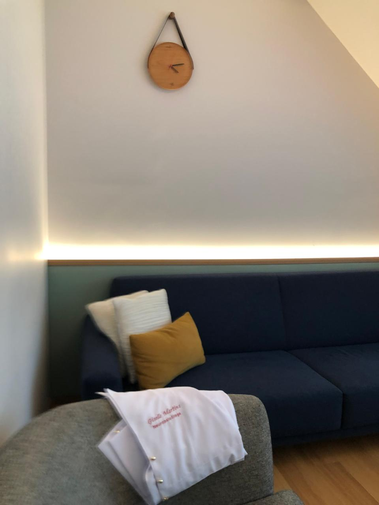
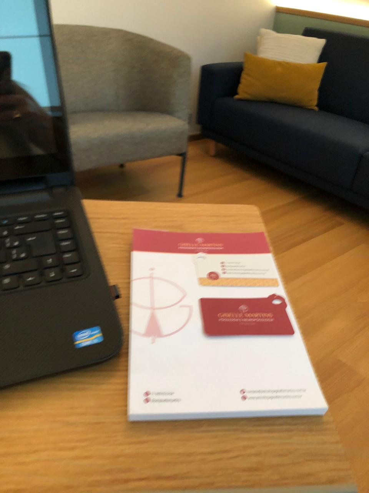

Um espaço só seu
Um tempo dedicado a você, onde pode falar livremente e ser ouvido com atenção e respeito.
A ansiedade que não passa, a cobrança que não dá trégua, o cansaço de segurar tudo sozinho. Aqui existe um espaço seguro para colocar isso em palavras, com escuta, acolhimento e sem julgamentos, no seu tempo.
A terapia é um espaço de conversa, no seu ritmo, para entender o que você sente e por quê. Não existe forma certa de começar, basta vir como você está.
Um tempo dedicado a você, onde pode falar livremente e ser ouvido com atenção e respeito.
Dar nome ao que pesa ajuda a enxergar com mais clareza, e a sair do piloto automático.
Aos poucos, você desenvolve recursos para lidar com as dificuldades e cuidar melhor de si.
Não é preciso chegar ao limite para buscar apoio. Se algo aqui ressoa com o que você vive, conversar pode ser um bom começo.
Preocupação que não desliga, coração acelerado, a sensação de que algo ruim vai acontecer.
O cansaço de dar conta de tudo, a sensação de estar no limite e sem espaço para respirar.
Dificuldade de se valorizar, autocrítica dura e a sensação de nunca ser suficiente.
Dificuldades com parceiros, família ou no trabalho, e padrões que se repetem.
Perfeccionismo, autocobrança constante e o medo de decepcionar os outros.
Mudanças de fase, decisões difíceis e a incerteza sobre os próximos passos.
A dor de uma perda, de alguém, de uma relação ou de uma fase, e o tempo de reconstruir.
Tensão que vira sintoma físico, irritabilidade e a dificuldade de desacelerar.
“Acolher cada pessoa em sua história, com um olhar para além das imperfeições.”
O que guia o meu trabalhoAcredito numa psicologia que enxerga você por inteiro, não apenas um sintoma ou um diagnóstico, mas a sua história, o seu contexto e a sua forma única de sentir o mundo.
Meu jeito de atender é tranquilo, próximo e sem julgamentos. Conduzo cada encontro respeitando o seu tempo, criando um espaço seguro para que você possa se abrir quando se sentir pronto. Mais do que dar respostas prontas, caminho ao seu lado enquanto você encontra as suas.
Se você nunca fez terapia, tudo bem. Veja como costuma ser o caminho, sem mistério e sem pressão.
Um primeiro contato para você tirar dúvidas, contar o que procura e ver se faz sentido começar.
Nos conhecemos com calma. Você fala no seu ritmo, e juntos entendemos o que te trouxe até aqui.
Encontros regulares, geralmente semanais, de cerca de 50 minutos, um espaço contínuo de cuidado.
Cada processo é único. Caminhamos respeitando o seu momento, sem metas forçadas nem comparações.
Presencial em São Paulo ou online, no conforto da sua casa, a escolha é sua. O que não muda é o cuidado com cada detalhe para você se sentir seguro.


Dar o primeiro passo pode ser difícil, e tudo bem ir no seu tempo. Se quiser conversar, será um prazer te ouvir e entender como posso ajudar.